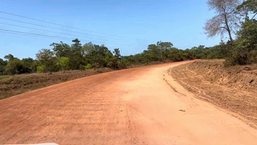

00:00:09.567
Estrada de terra avermelhada faz uma curva sob o céu azul, entre barrancos baixos e árvores.
PA-257 (Translago), oeste do Pará · provável
Na abertura, o apresentador menciona a Translago como parte do acesso a Arimum, passando pelo distrito de Arapixuna.
Transcrição · 00:00:00 | 00:00:09 | 00:00:16
Turismo Aqui — quadro de vídeo publicado no YouTube